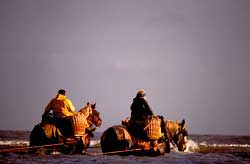
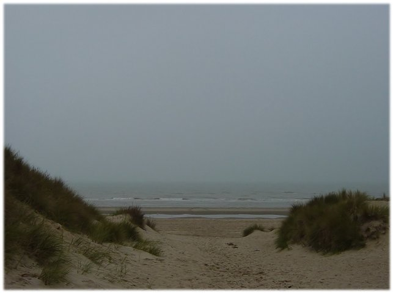
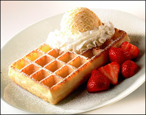

Retour à
l'index
Pêche
Une activité
particulière de la Belgique est la
pêche aux crevettes grises, specialité du pays, qui se
pratique encore
de manière artisanale. En effet les
pêcheurs traînent leurs filets aidés par des
chevaux.
Ces pêcheurs portent un ciré, un chapeau et
des bottes jaunes.
Gastronomie
La
Belgique est renommée dans le monde entier pour ses gaufres:
à base de sucre, oeufs et farine, qui sont
servies avec de la confiture ou de la crème fraîche.
Les
moules frites sont un
autre plat belge, mais ce pays
est aussi connu pour son chocolat et sa bière.


Retour à
l'index